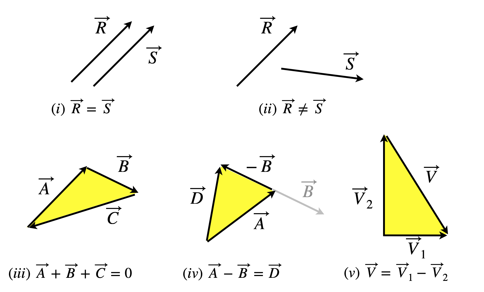
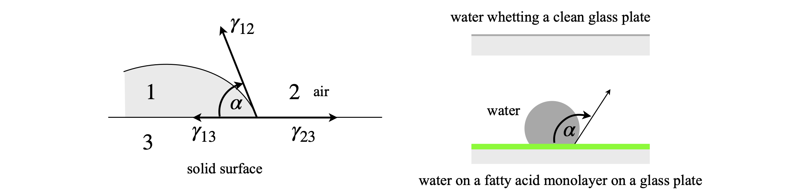
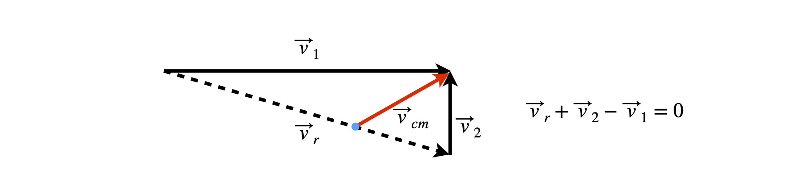

1 Vector basics
Contents
1 Vector basics#
Introduction#
Although vectors, such as force or velocity, have two ‘dimensions’ - magnitude and direction - mathematically, they can have any number of dimensions. A vector’s components need not be objects in any physical space; this is not as bizarre as it sounds, for example, your car can be described by its make, colour, manufacture date, engine-capacity, and model. These values can form a vector such as (Ford, yellow, 2005, 1900 cc, estate). However, a vector is more than just a list; it is constructed from a basis set. The basis set contains the primitive components and the vector is constructed as a linear combination of these elements; more of this later. The basis set is not always apparent, for example, when drawing arrows on a graph, but in all cases, including topics as diverse as quantum mechanics and geometry, the basis set must be explicitly defined before a calculation is started. However, in apparent contradiction to this, many vector properties and formulae can be obtained by symbolically, which means algebraically, \(\boldsymbol{ A} + \boldsymbol{B}\), etc., without a thought about the basis set, and some of these calculations are described in Section 6.2. As an aside, W. Hamilton, of Hamiltonian fame, first seems to have used the word ‘vector’. J. Willard Gibbs who developed much of thermodynamics also largely developed vector analysis.
1.1 Notation#
It is important to distinguish vectors from scalars. Scalars are printed in normal typeface, 1, 2, 3, etc. Symbols with an arrow \(\vec A, \vec B\), and so forth will represent vectors. Square brackets \([1\;3\;-4]\) are used to represent a vector’s components 1, 3, and -4, so a vector is written as \(A= [1\; 3\; -4]\). If \(A\) ends at a point on a graph,it is defined to have a basis set ( \(x, y, z\) ) which, when it is necessary to be explicitly stated, will have round brackets as will coordinates of a point in space (4, 0, 2). Some authors put a line above a letter, e.g. \(\bar B\), to indicate a vector, we will place an arrow over the letters, for example vector \(A\) to \(B\) is written as \(\vec {AB}\). The vector’s magnitude or length is enclosed in a pair of vertical lines as \(| A|\); however, vertical lines are also used to indicate the absolute value of a quantity and represent a determinant, but the context should make the meaning clear.
1.2 Basis sets#
In describing many phenomena, such as the static magnetic field in an NMR machine, right-angled (rectilinear) or Cartesian axes are used. A vector can be represented in this space as a linear combination or multiples of three vectors of unit length each one pointing from the origin along each of the x-, y-, or z-axes. These three unit vectors form the basis set, and in three dimensions are normally labelled \(\vec {i}, \vec{j}\), and \(\vec k \). In quantum mechanics, for instance, the basis set needed is not always that of spatial coordinates, and often comprises the set of quantum numbers a given atom or molecule possesses. The basis set for a car with the description, yellow Ford estate, 1900 cc, 2005 could be \(\text{(make, colour, manufacturing date, engine size, model)}\) making \(\begin{bmatrix}Ford & yellow& 2005& 1900 & estate\end{bmatrix}\).
Before basis sets are considered, some general vector properties are defined, which still apply whether we specifically use them in the form of the components of a basis set or not.
1.3 Position vectors#
Conventionally, positional vectors are drawn as arrows to indicate which way they point, and a set of axes is not usually shown. Some of the infinite number that could be drawn is shown in Fig. 6.1. Notice that in the top left of the figure, vectors \(\vec R\) and \(\vec S\) are the same even though they are displaced from one another because they have the same length and direction. Consequently, on the top right, \(\vec {R} \ne \vec{ S}\) because their directions differ even though their lengths are identical. The coordinate origin of each vector is always at its base, so \(\vec R\) and \(\vec S\) have their own local coordinate origin whether or not they are equal to one another. To add two vectors, form a triangle; to add three, form a rectangle; and form a polygon if there are more, so that the sum of all the vectors is zero.
In Fig. 6.1 (iii), the vectors \(\vec {A},\vec{ B}\), and \(\vec C\) are added by placing the head (or tip) of one to the tail of the other and completing the triangle, the equation is therefore
where \(\vec 0\) is the null or zero vector. It follows that \(\vec{A} + \vec {B} = -\vec {C }\) with \(\vec C\) as drawn in the figure with its head at the foot of \(\vec A\). The vector \(-\vec{C }\) has the same direction as \(\vec C\) but points in the opposite direction, i.e. its arrow-head would be at the head of \(\vec B\). Alternatively, the equation could be defined as \(\vec{A} + \vec{B} = \vec{C}\) where \(\vec C\) is the resultant of \(\vec{A} + \vec{B}\). In this case, \(\vec C \)would have been drawn so that it starts at the foot of \(\vec A\) and points to the head of \(\vec B\).
It is easy to get muddled with vector directions and the simplest thing is to make \(\vec {A} + \vec{B} + \vec{C} = \vec{0}\) where the arrows are always head to tail, but note that in this case the resultant of adding \(\vec A\) and \(\vec B \) is \(-\vec C\).
To subtract the two vectors shown in (iii), to obtain \(\vec{ A} - \vec{B}\), reverse \(\vec B\), which means placing the arrow tip on the other end of the line, see figure 1 (iv). Then place the tip of \(\vec A\) to the base of the reversed \(\vec B\); the result we shall call \(\vec D\). The subtraction \(\vec{B} - \vec{A }\) produces the vector \(-\vec {D}\).

Figure 1 Diagram showing some examples of adding and subtracting vectors.
In Fig. 6.2, OA and OB are vectors and because both start at the origin, they are called position vectors . The basis set for OA and OB are unit vectors along the \(x\)- and \(y\)-axes only, because they are two dimensional. Vector OA comprises 3 units of the \(x\)-axis base vector and 2 units of the \(y\)-axis base vector. Later on, we will find that to solve some problems this basis set will have to be written explicitly as \((i, j)\) where \(i\) and \(j\) are the unit vectors along \(x\) and \(y\), but before doing this the properties of positional vectors are described and some problems solved.
The length of a position vector is, by Pythagoras’ theorem,
where \(a_1, a_2\), and \(a_3\) are the components; if \(\vec V\) (Fig. 2, right) ends at \((x_1, y_1, z_) = (3, 4, 5)\) then \(|\vec V|= \sqrt{9+16+25}=5\sqrt{2}\) .In vector \(\vec{A}, a_1 =3,\; a_2 =2\) or \(\vec {A} =[3\; 2]\) and there is no \(a_3\) because \(\vec A\) is two dimensional; its length is \(13\) .
The length or projection of \(\vec A\) along the x-axis is \(\vec A_x =|\vec A|\cos(\theta)=3\) and along the \(y\)-axis \(\vec A_y =|\vec A|\sin(\theta)= 2\) and the angle $\theta =\tan^{-1)(2/3).
The vector \(\vec AB\) is defined as \(\vec {AB} = \vec{B} -\vec {A}\) (see figure 2) and the individual coordinates are subtracted, therefore \(\vec {AB} = (2, -5)\) and has length \(| \vec {AB}| = \sqrt{29} = 5.385\). This vector is not the same as the dashed line in figure 2 between \(A\) and \(B\), but a parallel one starting at the origin and ending at \((2, -5)\). This illustrates that each vector has its own set of axes from which it springs; to make \(\vec AB\) start at the end of \(\vec A\) the origin of its axes have to be placed there, not at zero as our calculation did. The angle between two vectors, say \(\vec A\) and \(\vec {AB}\), can be calculated by trigonometry, but this is clearly awkward and is overcome by learning how to multiply two vectors together. This is described in the next few sections.
Figure 2. Two- and three-dimensional Cartesian coordinates. Right: A vector \(\vec V\) is shown pointing from the origin to point \((x_1, y_1, z_)\).
1.4 Surface Tension#
The surface tension of a liquid is a property of the intermolecular forces that exist in a liquid. Mainly these forces are directed into the liquid at the surface with air (or with the liquid’s vapour) and not out of the surface. The energy of molecules at the surface is greater than that of the bulk and consequently it takes energy to increase the surface area. In thermodynamic terms the surface tension \(\gamma\) is the rate of change of Gibbs energy with increase in area, \(dG=\gamma dA\) thus \(\gamma\) has units of force/length. The values of \(\gamma\) are in the range \(20-30\) mN/m for common liquids such as acetone, benzene or ethanol, but are larger for water (\(72.8\)) because hydrogen bonds are broken and in liquid metals such as mercury where \(\gamma =485\) mN/m the surface tension values are large due to the coulomb attraction to be overcome by bringing an ion from the interior to the surface.

Figure 2a. Left: The interface of a liquid, air and a solid surface showing the force vectors. Right: Examples of ‘whetting’ top, forming a monolayer, and non-whetting lower. The vectors shown as surface tensions \(\gamma\) are more accurately the forces \(\gamma dL\) where \(dL\) is a small increment in length.
A drop of liquid water will form on a hydrophobic surface, such as polythene or a fatty acid surface and spread on one that is not such as clean glass. The diagram 2a shows this effect. If the liquid on the solid surface in not to spread then the forces must balance. The vertical components are in equilibrium because the surface is solid, the horizontal ones are shown in fig 2a and are
where the cosine gives the projection of the force onto the horizontal plane. If \(0^\text{o}\lt \alpha <90^\text{o}\) the surface is ‘whetted’ and if \( 90^\text{o} \lt \alpha \lt 180^\text{o}\) ‘non-whetted’ and a bubble forms.
If one liquid is added to another and they are immiscible, such as a drop of n-decane added to water, then a lens may form on the surface, see figure 2a1. The shape and position of the lens will depend on the three densities and inter-facial tensions. The surface tension of n-decane is 23.9 mN/m and that between it and water is 52 mN/m which is not a huge amount less than that of water’s surface tension because here also hydrogen bonds have to be broken to accommodate the hydrophobic liquid.
Figure 2a1. A lens forming on a surface between two immiscible liquids. ‘a, O, w’ refer to air, organic liquid and water respectively. The angles are measured relative to a horizontal axis as shown. The vectors \(\gamma\) are numerically equal to the respective inter-facial tensions.
The condition for equilibrium is that between the vertical and horizontal components, the horizontal ones are
and vertical (ignoring gravity)
If the full horizontal force \(\gamma_{wa}\) exceeds the other two then spreading \(S\gt 0\) will occur;
1.5 Newton Diagrams, molecular beams and reactive scattering#
An important example of vector addition is found in Newton Diagrams which are used to describe the kinematics of crossed molecular beams. In these experiments two gaseous species are cooled by expansion into a vacuum chamber and the atoms and molecules are made to collide into one another and the direction and energy of the scattered species is measured. Although the atoms or molecules are cooled they still have considerable velocity, a few hundred metres per second is not uncommon. If no reaction takes place the collision is called elastic (Ar + Ne and Kr +HCl for example) and inelastic if there is a chemical reaction such as \(\mathrm{K+CH_3I} \to \mathrm{KI +CH_3}\) or \(\mathrm{H+I_2}\to \mathrm{I+HI}\) and here the difference in velocity provides the kinetic energy to overcome any reaction barrier.
A rough sketch of the experimental set up is shown in figure 2b. Inside the evacuated chamber, parts of which may be cooled with liquid nitrogen, the gas pressure is so low that there are no collisions between residual gas molecules and the molecular beams, and these only interact where they cross. After collision the species recoil in a manner determined by the potential energy between them, see Chapter 11.3.8 (Numerical Methods). By examining the number of particles detected vs. the measuring angle the shape of the potential energy between the interacting species can be elucidated. In some cases the recoiling species can be observed to be in the backwards direction, which means being scattered towards the source with an angle \(\Theta \gt 90^\text{o}\). This is the case in the reaction \(\mathrm{K+CH_3I} \to \mathrm{KI +CH_3}\). The skimmer works to select only the centre part of the gas jet and so forms the molecular beam. Pumps remove excess gas before it enters the main chamber.
Figure 2b. Sketch of a crossed molecular beam experiment. The oven heats the gas or if a metal is used to form its vapour. The difference in temperature is used to determine the collision energy. Most of the gas/vapour is pumped away here but the centre part of the gas jet is passed into the reaction chamber via the skimmer. This is cone shaped with a very small hole in the apex. The main vacuum chamber is kept under ultra low vacuum. The detector can be moved in an arc to collect scattered species.
The two beams are represented by vectors of length equal to their velocity. Often the beams approach one another at right angles as in figure 2b because this is simplest experimentally. The centre of mass is a constant of the motion and its vector is shown in the figure also. After collision, the centre of mass still moves along the same direction as before collision, but now the species move with different velocities i.e. different speeds and directions, see figure 2d. In a Newton Diagram is conventional to show the reactant beams and scattered product beams on the same diagram but with the reactant vectors starting at zero together with the products. As there is spherical symmetry along the direction of each beam these angles are equivalent and so vectors can be drawn in a plane and for the purposes of illustration it is assumed scattering is in this plane also. The molecular beams will also have an energy and hence velocity spread, but, for simplicity we assume that this can be ignored.

Figure 2c. Two molecular beams represented by vectors pre - collision. The centre of mass vector \(\vec v_{cm}\) is shown in red. Vectors of approaching species are \(\vec v_1, \vec v_2\).
Figure 2d. Newton Diagram for elastic scattering of species 1 and 2. In this figure the collision occurs at the origin of vectors \(\vec v_1\), (bottom left) pre-collision the vectors more as in figs 2a and 2b). After collision these vectors are labelled \(\vec v_2\) and \(\vec v_1', \vec v_2'\). The dashed labels indicate post-collision vectors. The detector is placed at angle \(\Theta\) to beam 1. Species 1 reaching the detector at an angle \(\Theta\) has been scattered to angle \(\chi\) in the centre of mass (c.m.) system. The vectors \(\vec w\) are relative to the centre of mass meaning that the kinetic energy of the centre of mass \(\frac{1}{2}(m_1+m_2)\vec v_c^2\) has been removed.
In elastic scattering there is no chemical reaction and species 1 is scattered from \(v_1\) into vector \(v_1'\) and species 2, which only changes slightly in this particular diagram, to \(v_2'\). If the detector is placed at angle \(\Theta\) in the lab. frame, clearly it will capture scattering only in this direction should there be any. The same scattering in the molecular or centre of mass (c.m.) frame is at angle \(\chi\). Species 1 in the cm frame is vector \(w_1'\), i.e. vector \(w_1\) is equivalent to vector \(v_1\) but in the c.m. frame, and similarly for species 2. Changing angle \(\Theta\) must also change angle \(\chi\).
According to classical mechanics for any impact parameter \(b\) there is a definite scattering angle \(\chi\). The connection between \(b\) and \(\chi\) is described in more detail in the chapter on Numerical Methods (11.3.6). The impact parameter is the distance apart that the two species 1 and 2 meet relative the their line of centres, (see Figure 11.4 in the chapter on Numerical Methods) i.e. if species 1 is fixed on the \(x\) axis and species 2 then moves parallel to it in the \(x\) direction the impact parameter is the distance in the \(y\) direction they are apart.
Figure 2e. Sketch showing one particle (atom/molecule) approaching the other with an attractive potential at long range and a repulsive one at short range, such as a Lennard-Jones potential. The scattering angle is \(\chi\) and the impact parameter \(b\).
The total kinetic energy and total momentum remain fixed throughout the whole process and so conservation of momentum produces
where \(\vec v_{cm}\) is the velocity of the centre of mass and
The momentum can also be written as
Conservation of kinetic energy, \(T\) gives
where \(\mu=m_1m_2/(m_1+m_2)\) is the reduced mass of the colliding pair. The amount \(\mu v_r^2/2\) is the kinetic energy of the colliding species, i.e. the collision energy. Typical values for the velocities are in the hundreds of metres per second but the difference in velocity \(|\vec v_r|\) is what is important to calculate the collision energy. If the relative atomic or molecular masses are 20 and 40 and the relative velocity 100 m/s the collision energy is \(20\cdot 40/60\text{ amu } 10^4\;N_A\approx 482\) kJ/mole where \(N_A\) is Avogadro’s number. This is a relatively large energy and sufficient to cause a chemical reaction if this were possible.
The initial relative velocity of the two species is ,
(see fig 2c) and after collision,
where \(\vec v_r'\) the final relative velocity is shown in fig 2a. Relative to the moving centre of mass these vectors are
Construction from the vector diagram gives
which means that the velocity of a species is the velocity of the centre of mass plus the velocity relative to that.
The relative velocity’s components \(\vec w\) are found by removing the centre of mass, which turns out to be the same as weighting the \(\vec v_r\) with the mass fraction of the other species,
and similarly for the other vectors,
from which it can be seen that for elastic scattering \(|\vec w_1|=|\vec w_1'|\) and similarly for \(\vec w_2\). The vectors in each pair are only rotated by \(\chi\) from one another and as energy is related to the magnitude of the velocity squared the total energy is unchanged.
The direction of the scattering, forwards or backwards can be appreciated with figure 2d and fig 11.5, 11.6 and 11.10 (Chapter 11). If the impact parameter is large the approaching atom skims past the other and its trajectory is only slightly changed and scattering is in the forwards direction. If, on the other hand \(b\) is small the collision is much more ‘head on’ and the scattering returns the atom towards its starting position, effectively a reflection, and the scattering is backwards. The zero angle for scattering is taken to be that given by vector \(\vec v_r\), or equivalently \(\vec w_1\), the back scattering at \(180^\text{o}\) is in the direction of \(\vec w_2\).
If a chemical reaction can occur the process is called reactive or inelastic scattering and then the mass of the scattered species has changed \(\mathrm{K+CH_3I} \to \mathrm{KI +CH_3}\) for example and so the equations above have to be modified accordingly. Additionally molecules have internal energy and this changes on reaction not least due to the differences in zero point energy but also other vibrational and rotational levels may be excited. This change in total kinetic energy means that the vector of the product must lie between two limits; no internal energy or \(100\)% internal energy and the (product) vector \(\vec w_1'\) can lie anywhere on a circle centred at the c.o.m. with radius \(|\vec w_1'|\). This also means that because \(\vec v_1'\) is linked to \(\vec w_1'\) it is to be found within a cone whose centre line is \(\vec v_{cm}\).
If the impact parameter is large, at grazing incidence where their separation is a little larger than the sum of their radii, then a ‘spectator stripping’ reaction may occur. An example of this is \(\mathrm{K + I_2 \to I + KI}\) where the I atom largely follows the trajectory of I\(_2\) and is measured in the forwards direction. The other extreme case is rebound reaction in which there is backwards scattering, \(\mathrm{K+CH_3I} \to \mathrm{KI +CH_3}\) and \(\mathrm{H + Cl_2 \to HCl + H}\) are examples of this and so the reaction must occur when the K or H atoms approach with small impact parameter, i.e. along the line of centres.
A third possibility exists which is that the species form a complex instead of immediately scattering. If this complex is long-lived compared to the time it takes to reach the detector, a few milliseconds, then the only product to be observed will be in the direction determined by the centre of mass vector. If the complex is short lived, say a few rotational periods then the products will be sprayed out in all directions as it rotates making analysis very hard. See Bernstein (1982) and Steinfeld (1999) for a full explanation of reaction dynamics.
2 Vector multiplication: dot, cross, and triple products#
Multiplying two vectors together can be done in two ways; the result is either a scalar (number), or a vector.
\(\quad\) The dot or scalar product \(\vec{A}\cdot \vec{ B}\) of vectors \(\vec{A}\) and \(\vec{B}\) produces a number.
\(\quad\) The cross or vector product \(\vec{A} \times \vec{B}\) produces another vector.
Triple products, as you would imagine, are more complicated, and can form a vector \(\vec{A} \times (\vec{B} \times \vec C )\) or a scalar \(\vec{A}\cdot \vec B \times \vec C\). They are described in Sections 17 and 18.
2.1 Dot product#
The dot product of two vectors \(\vec{A}\) and \(\vec{B}\) is a number and is defined as
where \(|\vec A|\) is the absolute value of the vector \(A\), which is its length, and \(\theta\) is the angle between the vectors. Figure 3 shows a two-dimensional vector. The dot product is a number not a vector because the absolute values \(|\vec A||\vec B|\) are numbers and as shown in figure 3, it is the length of \(A\) times \(|\vec A|\cos(\theta)\), which is the same as the length of \(B\) times \(|\vec A|\cos(\theta)\).
We can find the angle between any two vectors by rearranging equation 1;
Before this equation can be evaluated, the vectors \(A\) and \(B\) have to be represented in a basis set, that is, as components of basis vectors. Usually, and for simplicity, we choose a basis set that runs along the \(x\)-, \(y\)-, and \(z\)-axis. This is described in section 2.5.
In figure 2c above the centre of mass scattering angle \(\chi\) can be found from the dot product of \(\vec w_1\cdot \vec w_1'\).
and the vectors are defined above giving
because the scattering is elastic \(|\vec v_r|=|\vec v_r'|\) and \(\vec v_r =\vec v_1-\vec v_2\) which are the original velocities of species 1 and 2. However, without knowing what the vectors are in terms of numbers, i.e. in a basis set, the angle \(\chi\) cannot be found.
2.2 Cross product#
The dot product is not the only way we can multiply two vectors, this can be done so that a vector rather than the scalar is produced. The cross product is
where \(\vec n\) is a unit vector perpendicular to vectors \(A\) and \(B\). More details are given in Section 16. This product vector is at right angles to the other two, consequently the cross product is unique to vectors in a three-dimensional space. The cross product, also called the vector product , is used to simplify geometric calculations, such as calculating torsion angles between bonds in proteins or other molecules, or the distance of an atom from the plane of a molecule; for instance, an oxygen molecule above the plane of the haem in haemoglobin, see Q 52. Cross products have other geometric uses, such as calculating the torque when tightening a screw thread, or the angular momentum and velocity of rotating bodies. Cross products also enable us to calculate the area of a triangle or parallelogram.
2.3 Perpendicular vectors#
If the angle \(\theta\) between two vectors is \(90^{\text{o}}\), then the dot product is zero
Because the two vectors are at right angles to one another, the projection of vector \(A\) onto \(B\) and vice versa is zero, but this does not mean that either \(\vec A = \vec 0\) or \(\vec B = \vec 0\). If two vectors \(A\) and \(B\) satisfy the condition, \(\vec A \cdot\vec B = \vec 0\) they are said to be orthogonal . If the vectors both have a length of unity \(|\vec A| = |\vec B| = 1\), they are normalized, and if \(\vec A\cdot \vec B = \vec 0\) then they are also orthogonal and together these two conditions make the vectors orthonormal .
The cross product of two perpendicular, three-dimensional vectors is not zero, but \(\displaystyle \vec A\times \vec B=|\vec A||\vec B|\) and the unit vector \(\vec n\) is perpendicular to both vectors \(A\) and \(B\).
2.4 Parallel vectors#
If two vectors are parallel, \(\displaystyle \vec A\cdot \vec B=|\vec A||\vec A|\cos(0) =|\vec A||\vec B|\), because the angle between them is zero. Therefore, the dot product of a vector with itself is the square of its magnitude, \(\displaystyle \vec A\cdot \vec A=|\vec A|^2\) and this is a convenient way of calculating its length. The cross product of two three-dimensional vectors is zero \(\displaystyle \vec A\times \vec B=|\vec A||\vec B|\sin(0)\vec n=0\).
Figure 3. Left: Vector \(\vec A\) with components \(a\) and \(b\) on the \(x\)- and \(y\)- axes; \(a = |\vec A|\cos(\theta), b = |\vec A\sin(\theta)\). Middle and right: Projection of vector \(A\) on \(B\) which is \(|\vec A|\cos(\theta)\) and of \(B\) on \(A\) which is \(|\vec B|\cos(\theta)\).
2.5 Basis sets#
Once we define a basis set then specific, rather than general calculation can be performed. For example, if vectors \(A\) and \(B\) of figure 3 are given magnitudes we cannot tell what the angle between them is because we do not know how \(A\) and \(B\) relate to one another. A basis set provides the scaffold, as it were, on which the vectors are fixed. It is possible to choose different basis sets to solve the same problem and to convert between one set and another. The following three properties of vectors and basis sets are important:
(i) Every vector is always made from a linear combination of the components of its basis set.
(ii) Because a basis set is the minimal possible set, it cannot be decomposed any further or made any simpler.
(iii) Any vector is unchanged by changing its basis set and therefore its coefficients must change between bases.
For example, the vector \(A\) in figure 3 has components of \(a\) units on the \(x\)-axis and \(b\) on the \(y\)- and is therefore described as \(\vec A = a\boldsymbol i + b\boldsymbol j\). In Cartesian coordinates, the basis set most often used is made of orthogonal, unit vectors along each of the \(x-, y-\) and \(z\)-axes; conventionally we represent this as the basis set \((\boldsymbol i, \boldsymbol j,\boldsymbol k)\) where \(\boldsymbol i, \boldsymbol j\) and \(\boldsymbol k\) are orthogonal unit vectors . Figure 4 shows the basis set vectors and a three-dimensional vector separated into it basis set components. A unit vector has length of \(1\), so a vector can be made from multiples of this. The \((\boldsymbol i, \boldsymbol j, \boldsymbol k)\) basis set is described more detail in Section 3.
Any vector can always be represented in several different but equivalent ways depending on which is easiest. We can choose to manipulate a three-dimensional vector in multiples of unit basis vectors \(\boldsymbol i, \boldsymbol j, \boldsymbol k\) or transform it into column or row matrices. The three-dimensional \(\boldsymbol i, \boldsymbol j, \boldsymbol k\) basis set written as three single column matrices and in standard form is
where the individual vectors are \(\displaystyle i=\begin{bmatrix}1\\0\\0\end{bmatrix}\) and similarly for \(j,k\). A vector \(2\boldsymbol i + 3\boldsymbol j - \boldsymbol k\) put into the column matrix form of the basis set is represented as
or more commonly as
If the basis set is chosen as row matrices then \(\displaystyle (2\boldsymbol i + 3\boldsymbol j - \boldsymbol k)\equiv [2,3,-1]\)
The matrix formulation of vectors is very adaptable and not restricted to three dimensions; in fact, any number of dimensions can be used. However, the \((\boldsymbol i \boldsymbol j \boldsymbol k)\) basis set can only be used up to three dimensions.
The elements of basis set can be numbers, or they could be a vector, a matrix, or a function or a set of functions. Some examples are considered more fully after some basic properties have been described. Using functions as a basis set is described in Chapter 9. For the present, we shall assume that a suitable basis set always exists and perform some calculations.
2.6 Vector origin#
If it is not otherwise specified, it is assumed that the origin of a vector is at the centre of the coordinates, i.e. at \((0, 0, 0)\). If this is not the case and the origin is at some other place, \((a, b, c)\) then we must subtract \(a, b\), and \(c\) from each of the three components and use \((x-a,\; y-b,\; z-c)\) as our vector. This has the effect of moving the origin to the base of our vector. In addition, when subtracting two sets of coordinates to make a vector, its base is now at the origin of the new set of coordinates, i.e. the origin has again been shifted. This is important; a vector always starts at the origin of its own local coordinates, which may not be the same as initially drawn on a diagram, so some care is needed; vectors are only a direction and length in space; they carry around their own coordinate system or basis set with them but this is hardly ever drawn.
2.7 Vector magnitude#
The magnitude of a vector \(A\), which may be imagined as its length, is used as \(|\vec{A}|\). If \(\vec{A} = [a b c]\) where \(A\) has components \(a, b, c\) in the 3-dimensional basis set \((x, y, z)\), then
but we can equivalently calculate
because any vector is parallel to itself and therefore \(\theta = 0\) in the dot product. This latter equation is very useful indeed when using the computer to do calculations because the dot product is usually a in-built function.
Figure 4. The orthogonal and normalized base vectors \((i, j, k )\).
2.8 Vector addition and subtraction#
Addition follows the familiar rules, except that each element in the vector adds separately; for example, the three-dimensional vectors represented by the two sets of coordinates is
and subtracting similarly
which, in effect, is what is done when drawing out a vector triangle. The same rule applies when adding matrices. In row and column matrix-vector notation, the same vector addition is written in matrix form as
Addition is commutative
and associative
which means that vectors can be added or subtracted in any order.
2.9 Dot Products or Inner Products in matrix-vector form#
The dot product using vectors in a three-dimensional basis set is calculated by defining the vectors as one-dimensional matrices, multiplying element by element and summing the result. See chapter 7 for matrix multiplication. The result is
In a dot product, the left-hand of the two vectors is always written as a row and the right always a column. The vector dot product is also called the vector inner product .
Changing a row into a column vector is called transposing , and this operation is indicated by a superscript \(T\). In quantum mechanics, the complex conjugate of each element in the row is always made when the dot product is formed from column vectors. The transpose is
The angle between two vectors is \(\cos(\theta) = (\vec A\cdot \vec B )/|\vec{A}||\vec{B}|\), equation 2, which can be expanded in the basis set giving
The normalization terms on the bottom of this equation are just the length of each vector as calculated by Pythagoras’ theorem. The angle between two vectors \(\vec A = [3\quad 2\quad 1]\) and \(\vec B=[-1\quad 0 \quad 1]\) is calculated as follows: the length of each vector is \(|\vec A|= \sqrt{9+4+1} =\sqrt{14}\) and \(|\vec B|= \sqrt{1+0+1} =\sqrt 2\), and the dot product is \(\displaystyle \begin{bmatrix} 3&2&1 \end{bmatrix}\begin{bmatrix} -1\\0\\1 \end{bmatrix}=-2\) and the angle \(\cos(\theta)= -2/(\sqrt 14\sqrt 2)\) which is \(112.2^\text{o} \).
2.10 Colliding molecules#
Newton diagrams describing elastic scattering are given above. The angles and vectors are shown in figure 2c. Suppose the initial speeds in an experiment colliding \(\mathrm{Kr+HI}\) are \(800\) and \(250\) m/s respectively. The masses are \(84\) and \(128\) amu and the scattering angle is \(\chi =25^\text{o}\) in the c.o.m. frame, see fig 2b. We want to calculate the angle \(\Theta\), the detector angle in the lab frame and also the angle \(\delta\) which is used in the transformation from lab to centre of mass coordinates. It is necessary, therefore, to calculate \(\vec v_1'\) (see figure 2c) and to do this \(\vec w_1\) and \(\vec w_1'\) are needed.
The initial vectors are \(\vec v_1 =\begin{bmatrix} 800 & 0\end{bmatrix}, \quad \vec v_2 =\begin{bmatrix} 0 & 250\end{bmatrix}\), thus \(\vec v_r=\vec v_1-\vec v_2=\begin{bmatrix} 800 & -250\end{bmatrix}\) with magnitude \(|v_r|=\sqrt{800^2+250^2}\).
The dot product connecting the \(\vec w\) vectors (see equation 0) to the scattering angle \(\chi\) is
where \(|\vec v_r|=|\vec v_r'|\). However, this does not help as the \(w\) vectors on the left-hand side of the equation have to be found another way because we cannot determine the individual vectors from the result of the dot product. From construction (figure 2c) these vectors are \(\vec w_1=\vec v_1-\vec v_{cm}\,, \quad \vec w_1'=\vec v_1'-\vec v_{cm}\).
The centre of mass vector is \(\displaystyle \vec v_{cm} = \frac{m_1\vec v_1}{m_1+m_2}+\frac{m_2\vec v_2}{m_1+m_2}\) which using the values given is
and so \(\vec w_1= \begin{bmatrix}800-317 & 151\end{bmatrix}\) but \(\vec w_1'\) has to be found and, as it has the same length as \(\vec w_1\) but a different angle, it can be found by rotating \(\vec w_1\) about the centre of mass. The rotation is performed by using a matrix, and is described in section 7 in chapter 7 Matrices. The first step is, however, to make sure rotation is about zero by removing the centre of mass coordinates from vector \(\vec w_1\) then rotate by \(-\chi\) to make rotation anticlockwise. The operation is to right multiply the rotation matrix by the vector \(\vec w_1\), less the centre of mass, then add this back after rotation, viz,
which are the coordinates at the end of \(\vec w_1'\) therefore \(\vec v_1'=\begin{bmatrix}818.5 & 218.3\end{bmatrix}\). This is also the coordinates at the tip of \(\vec v_1'\) and so the angle \(\Theta = \tan^{-1}(218.3/818.5) \approx 15^\text{o}\).
Now that we have both \(\vec w_1'\) and \(\vec v_1'\) the dot product will give the angle
and the calculation is simple!
and
making \(\delta = 7.3^\text{o}\). The Jacobian to transform from lab to centre of mass coordinates is \(\displaystyle \left(\frac{|v_1'|}{|w_1'|}\right)^2\frac{1}{|\cos(\delta)|}\).
The calculation starting with \(\Theta\) and finding \(\chi\) is a little different. Once \(\vec w_1\) is found the vector \(\vec w_1'\) will lie on a circle of radius \(|\vec w_1|\) with its centre at the centre of mass. The vector \(\vec v_1'\) will intersect this at two points and then \(\vec w_1'\) can be found by substituting \(y=x\tan(\Theta)\) into the equation for the circle described.
2.11 ISBN number#
An unexpected application of the dot product of a large vector is that used to check the ISBN number of a book. This code is unique to a book and also to each edition. A typical code is \(978-0-19-923091-4\) where the last digit is the check digit used to determine if the rest of the code is correct. This is clearly useful when a book is ordered, for example, if the check digit is not \(4\) a simple swapping of two digits may have occurred.
The calculation to produce the check digit (\(4\)) is
3 Unit vectors and normalizing vectors#
Unit vectors, as their name suggests, have a length of \(1\). A vector can be made into a unit vector by dividing by its length. If a vector is \(\vec v = [a\quad b\quad c\quad d]\) the normalizing condition is
where \(N\) is the normalization constant. If, for example, \(a = 2, b = -4, c = 5, d = 1\), then \(N^2(4+16+25+1)=1\) or \(N=1/\sqrt{46}\) and the normalized or unit vector is \([0.295\quad 0.589\quad 0.737\quad 0.147]\).
A second method is to use the dot product formula on the same vector, \(\vec v \cdot \vec v\), and because these must be parallel, \(\cos(\theta) = 1\), then,
where \(|\vec v|\) is the absolute value of length of the vector
The angle \(\theta\) between and two normalised vectors \(\vec v_n\; \vec w_n\) is found using
4 The orthonormal ijk base vectors#
A general method for describing a three-vector is to express it in terms of vectors along a set of axes. If the mutually perpendicular set of \(x\)-, \(y\)-, and \(z\)-axes is chosen, the basis set is orthogonal set. If the base vectors are also normalized to \(1\), each base vector is a unit vector and the set is orthonormal. Conventionally, orthonormal base vectors are labelled \(\boldsymbol i,\boldsymbol j,\boldsymbol k\) and any vector in this basis is written as,
where just for this special basis set the vectors \(\boldsymbol i,\boldsymbol j,\boldsymbol k\) are in bold italic. The vector \(\vec v\) is interpreted as having length \(a\) along the \(x\) axis direction and \(b,c\) along \(y\) and \(z\) respectively, hence the length of the vector is \(\sqrt{a^2+b^2+c^2}\).
To be clear: any vector such as \(\vec v\) is the linear combination of base vectors \(\boldsymbol i,\boldsymbol j\), and \(\boldsymbol k\) taken in proportions \(a, b\), and \(c\). This is why the vectors \(\boldsymbol i,\;\boldsymbol j\), and \(\boldsymbol k\) are called the base vectors or the basis set for describing other vectors.
If two vectors are
their dot product is \(\vec v \cdot \vec w = -27\). By multiplication, the following sum results:
At first sight, this seems a very complicated way of finding the dot product. However, the full multiplication is not necessary for two reasons; first, because \(\boldsymbol i,\boldsymbol j\), and \(\boldsymbol k\) are themselves orthogonal vectors of length \(1\), i.e. normalized so the dot product is \(1\),
because any vector is clearly parallel to itself and \(\cos(0) = 1\). Secondly, the base vectors \(\boldsymbol i,\boldsymbol j\), and \(\boldsymbol k\) are orthogonal, because they lie along axes mutually set at \(90^\text{o}\); therefore \(\boldsymbol{i\cdot j} =\boldsymbol{ j\cdot k} = \boldsymbol{i\cdot k} = 0\). We can calculate a dot product fairly simply with the following rules:
Stated in words:
Calculate the dot product by multiplying both of the \(\boldsymbol i\) vector terms together, making \(\boldsymbol {i\cdot i} = 1\), do the same for \(\boldsymbol j\) and \(\boldsymbol k\). Ignore, or make zero, all other cross terms, such as, \(\boldsymbol {i\cdot j}\).
Therefore, for our example \(\vec v \cdot \vec w = 15-32-10 =-27 \) and this is the same result as would be obtained from the vector dot product equation 5,
This is an important point as it means we have two ways of calculating vectors. When vectors have more than three dimensions, the matrix methods become far simpler, particularly when using the computer to do calculations.
Figure 5. Unit vectors \(\boldsymbol i\), \(\boldsymbol j\), \(\boldsymbol k\), and the vector, \(\vec v = a\boldsymbol i+ b\boldsymbol j+ c\boldsymbol k\), which has length \(a, b, c\) along each of the axes shown and which are the projections of \(\vec v\) on the axes. Right: the vector \(0.75\boldsymbol i - 1.5\boldsymbol j+ 2\boldsymbol k\).
The dot product of the vectors \(\vec A\) and \(\vec B\) in figure 2 is in the \((\boldsymbol i,\;\boldsymbol j)\) basis is
and in the matrix/vector basis where we multiply elements in the same position and add, i.e. (0,0)+(1,1) etc
If we wish to find the angle between the vectors then eqn. 2 has to be used. The length of a vector is the sqyure root of its dot product with itself so for vector \(\vec A\)
so \(|\vec A|=\sqrt{13}\). Similarly \(|\vec B|=\sqrt{34}\) making \(\cos(\theta)=9/(\sqrt{13}\sqrt{34})\sim 65^\text{o}\)
5 Summary#
Dot Product#
\(\displaystyle \qquad \vec A \cdot \vec B= |\vec A||\vec B|\cos(\theta)\)
The magnitude of \(\vec A\) is \(\displaystyle |\vec A|=\sqrt{\vec A \cdot \vec A}\)
A vector defined as \(\vec A=[a\;b\;c\;d]\) has 4 base vectors \(\displaystyle \qquad \begin{bmatrix} 1\\0\\0\\0\end{bmatrix}\begin{bmatrix} 0\\1\\0\\0\end{bmatrix}\begin{bmatrix} 0\\0\\1\\0\end{bmatrix}\begin{bmatrix} 0\\0\\0\\1\end{bmatrix}\)
and has dot product \(\displaystyle \vec A \cdot \vec B=\begin{bmatrix}a\; b\; c\; d\end{bmatrix}\begin{bmatrix}e\\f\\g\\h\end{bmatrix} =ae+df+cg+dh\)
In three dimensions only, in addition to the matrix method, orthonormal base vectors \(\boldsymbol i, \boldsymbol j, \boldsymbol k\) can be used ,e.g. \(\vec A=a\boldsymbol i+b\boldsymbol j+c\boldsymbol k\)
The Cross Product exists only in three dimensions#
where \(\vec n\) is a unit vectors perpendicular to vectors \(A\) and \(B\).